Between curiosity and useful
我是广东工业大学工业设计工程-体验设计方向的研二学生。过往的工科设计教育赋予了我极强的用户洞察力，在近期的项目实践中，我把这份洞察转化为了具体产品动作：拆解需求、分析竞品，并用数据验证产品决策。从0到1落地产品的过程让我很兴奋，我期待未来能用创造力，让每一个想法都掷地有声。
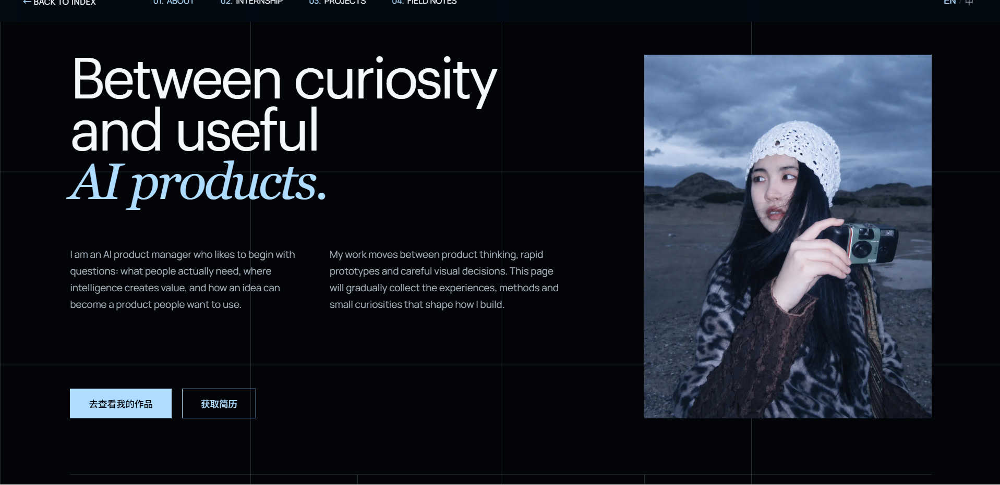
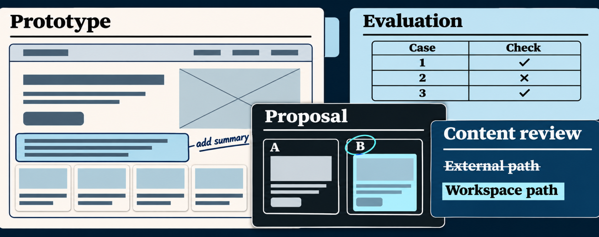
参与 AI 产品的功能设计、交互优化与生成效果评测
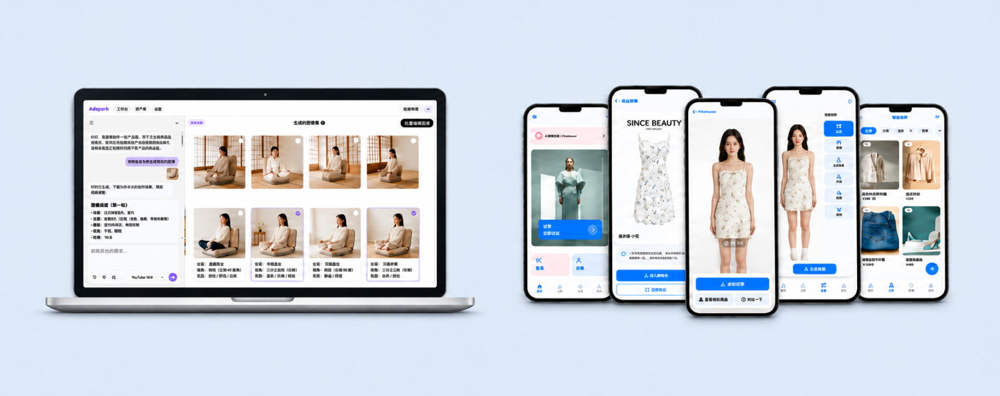
独立完成 AI 素材生成与虚拟试穿产品的设计和搭建
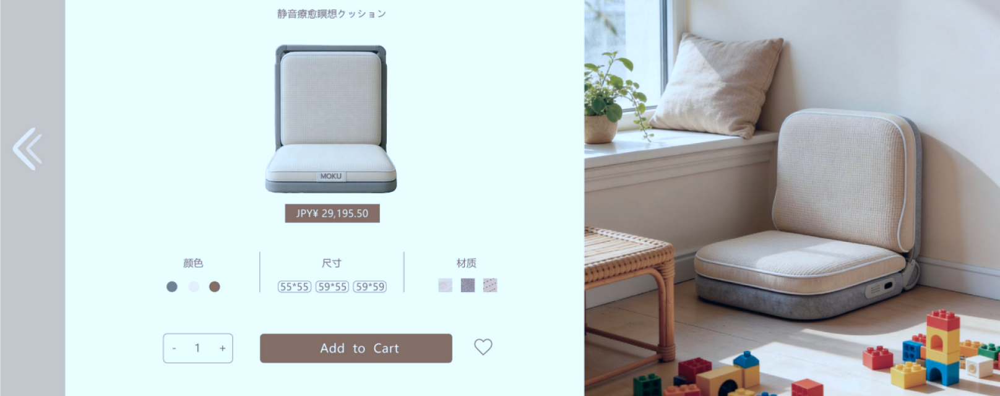
从产品调研到品牌营销，完成产品全流程方案
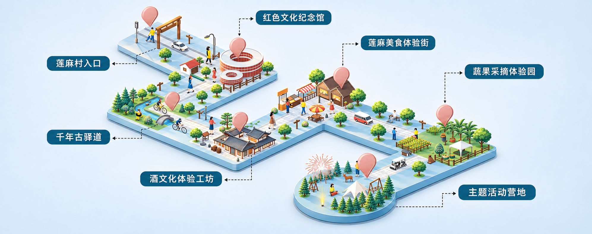
广东工业大学 · 工业设计工程 · 体验设计方向
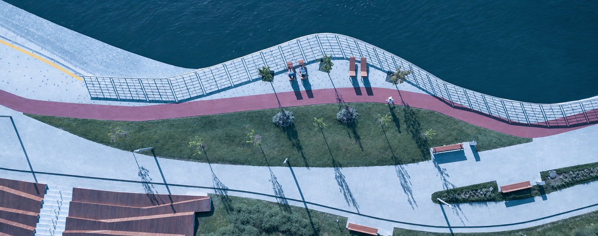
塑造了用户需求分析、场景调研与方案设计能力
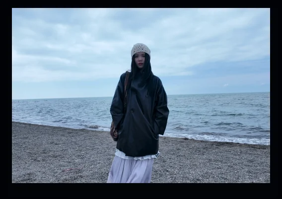
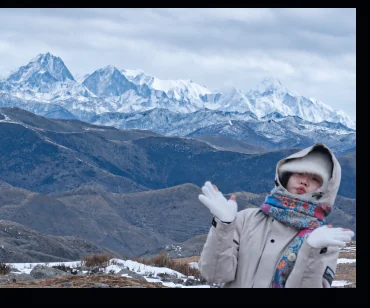
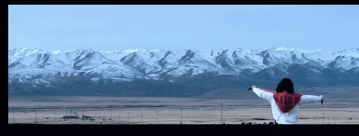
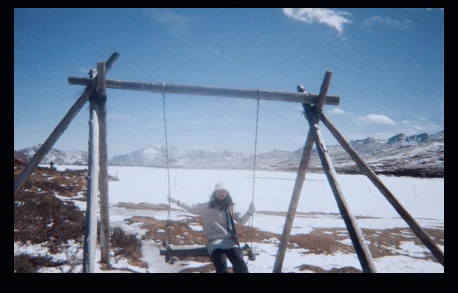
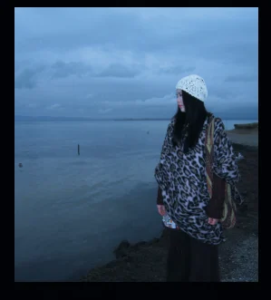
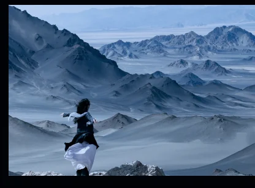
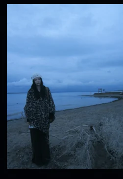
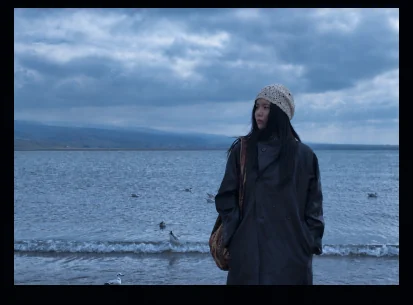
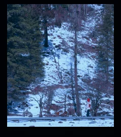
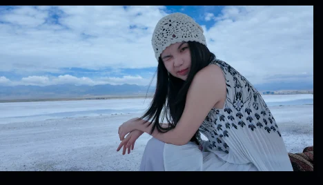
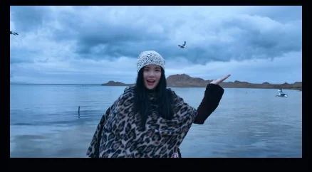
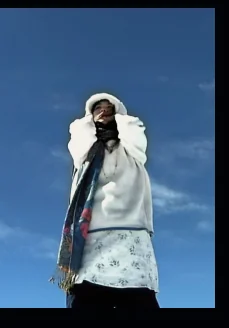
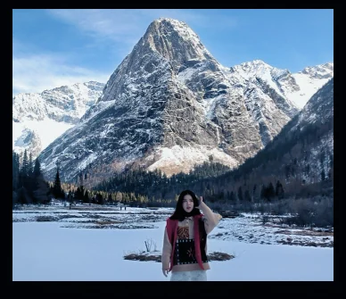
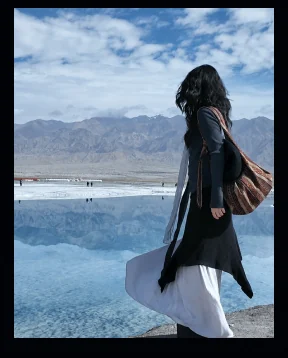
如果你想交流作品或工作机会，欢迎联系我。